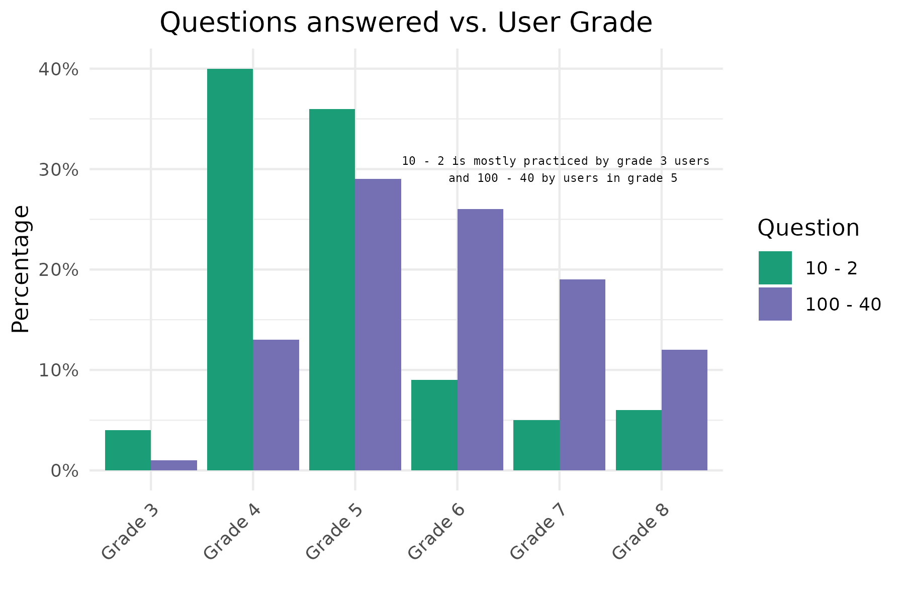
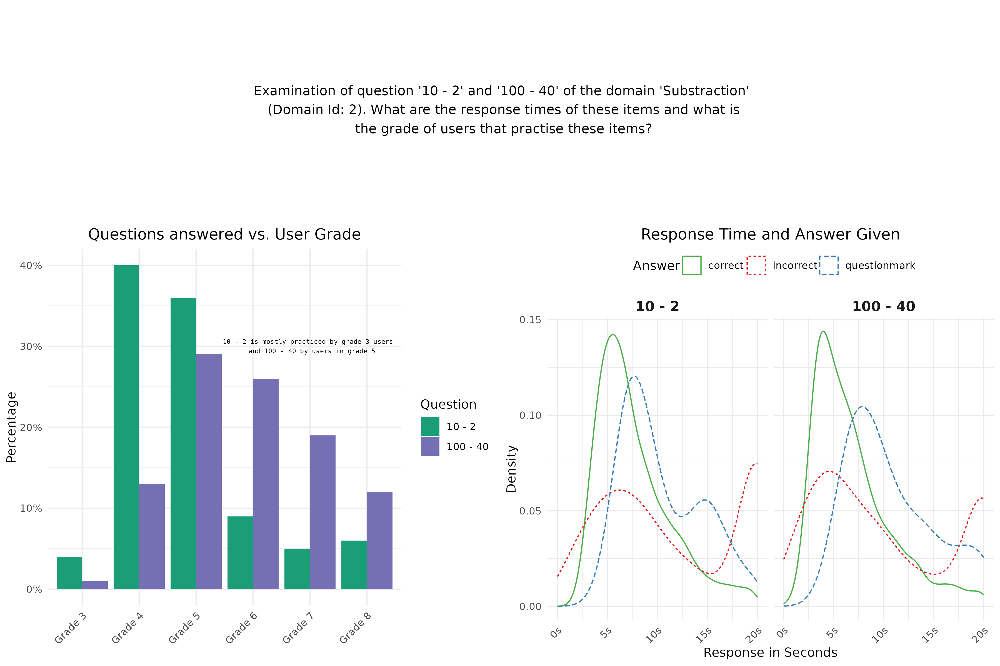
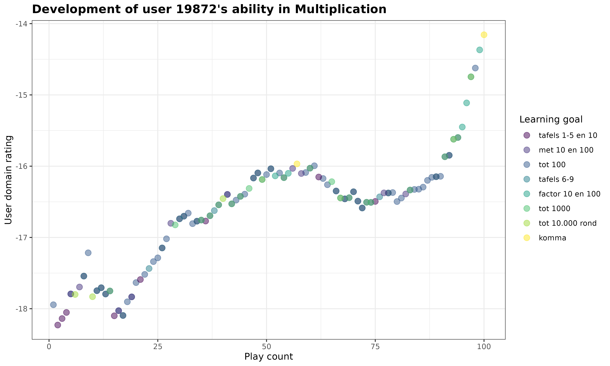

lint(rstudioapi::getSourceEditorContext()$path)Data Visualization Assignment 1
Instructions
Download the templates for part 1 of this assignment in the Github Repository (templates > assignment-1).
This is the first assignment for the Data Visualization module. The aim here is to get acquainted with the Prowise Learn data, practice with some ggplot basics, and to get you started with working with your visualizations for the final assignment.
With this assignment, you can gain 14 points (15 with bonus in part 1A). The points are awarded as following:
Individual part:
- 4 points (plus 1 bonus point) for Part 1A
- 2 points for Part 1B
- 0.5 point for R code that runs and 0.5 point for lintr-proof code
Group part:
- 6 points for visualization
- 0.5 point for R code that runs and 0.5 point for lintr-proof code
Part 1 is completed, and thus also graded, individually. Part 2 should be completed with your assigned group. Please make sure to clearly indicate your group number and names of all group members in your submission. One person should submit the assignment on behalf of the group. If more than one person submits the group assignment, we will only look at one of them.
The assignment is due on Sunday October 5th, 2025 at 23:59. Submit your assignment to Canvas, under “DV Assignment 1”.
Your submission for Part 1 should contain the following files:
- R code (style checked & working) in a
.Rmdfile
- Your assignment, including both the replicated plot and the interactive plot, compiled to
.html
with file names in the following structure: DV-Assignment1-Firstname-Lastname-PartA.Rmd and DV-Assignment1-Firstname-Lastname-PartA.html.
Your group submission (Part 2) should contain the following files:
- R code (style checked & working) in a
.Rmdfile
- Your plot and short description, compiled to
.html
with file names in the following structure: DV-Assignment1-GroupX-PartB.Rmd (or .R), DV-Assignment1-GroupX-PartB.pdf (or .html). When uploading an html file, make sure that it can be opened and the plots are readable. We will not compile the html for you!
⚠️ Please read this before submitting
We want to be able to understand and run your code. This will help us to give you a fair grade. Therefore we ask that - before you submit your code - you:
- Run the Code Style check (i.e. the lintr) with the following code & resolve any issues. If you don’t know what an error means, internet is your best friend! Also, study the lecture slides of the code styling session. Remember that you can win a full point by making sure your code styling is correct.
Clear your environment (
rm(list = ls())) and re-run your code. We won’t have anything stored in memory that is not created/retrieved in the script, therefore clearing your environment is a great way to detect any bugs that might accidentally be present.Don’t install packages in your code. If we need to install a package that you used, state which packages need to be installed at the beginning of your code.
Working with the Oefenweb Server
Before starting the assignment, please look at the handout on How to connect to the Oefenweb Server. This will help you to get started with retrieving data from the server. It also contains a useful tutorial on how to use SQL to retrieve data. Go through this code and make sure you understand it, as you will need it for this assignment.
Part 1: Oefenweb Data & Basic ggplot (Individual)
A. Replicate this plot
The following code will give you the data necessary to create the plot at the end of this section. Your task is to replicate the plot using ggplot2.
Don’t worry if you cannot reproduce the plots exactly. You can, for example, use different colors and font families.
Grading:
- Does the data show the same pattern? [2 pt]
- Is the styling the same? [2 pt]
- BONUS: Where there extra features added? [1 pt]
Bonus points
Can you spot any areas where this plot can be improved? 1 extra point will be awarded for changes made, or features added or removed to the visualization. They need to be meaningful and improve the visualization. Simply changing colors or themes will not be rewarded, unless you can motivate why your changes are an improvement.
knitr::opts_chunk$set(echo = TRUE) # set default echo = TRUE for all code blocks
rm(list = ls()) # Remove any existing objects in memory# Install Packages
# Find everything that the user currently has installed
all_installed_packages <- installed.packages()[, "Package"]
# Install any missing, but required packages
# nolint start -- trick to omit some lines from the lintr checker, only if you have a good reason!
if (!"tidyverse" %in% all_installed_packages) {install.packages("tidyverse")}
if (!"devtools" %in% all_installed_packages) {install.packages("devtools")}
if (!"oefenwebDatabase" %in% all_installed_packages) {devtools::install_github(repo = "Oefenweb/r-database")}
if (!"oefenwebTools" %in% all_installed_packages) {devtools::install_github(repo = "Oefenweb/r-tools")}
if (!"jsonlite" %in% all_installed_packages) {install.packages("jsonlite")}
if (!"ggplot2" %in% all_installed_packages) {install.packages("ggplot2")}
if (!"cowplot" %in% all_installed_packages) {install.packages("cowplot")}
if (!"lintr" %in% all_installed_packages) {install.packages("lintr")}
if (!"viridis" %in% all_installed_packages) {install.packages("viridis")}
if (!"plotly" %in% all_installed_packages) {install.packages("plotly")}
# nolint end
# Load Required Packages
library(tidyverse)
library(oefenwebDatabase)
library(oefenwebTools)
library(jsonlite)
library(cowplot)
library(ggplot2)
# make database connection
con <- oefenwebDatabase::connect()For this assignment, we will have a look at the two items of the same domain. First we have to get the items from the items table and after that we obtain the log_records of these items.
item_ids <- c(188391, 186408)
items <- get_query(
"SELECT *
FROM `items`
WHERE id IN ({item_ids*})",
con = con
)
# renaming first column of items data.frame to "item_id"
colnames(items)[1] <- "item_id"
# obtaining the log_records for the two items of the visualization
items_logs <- get_query(
"SELECT *
FROM `log_records_2`
WHERE `item_id` IN ({items$item_id*})",
con = con
)Now that we have the “raw” data, we can start to filter and prepare it for the visualization we want to build.
# make the question and answer_options "json" free
for (i in 1:nrow(items)) {
items$correct_answer[i] <-
jsonlite::fromJSON(items$answer_options[i])$answerOptions[1]
items$question[i] <- jsonlite::fromJSON(items$question[i])$question$content
}
# we do a left_join between items_logs and items table
# to get the item question and correct_answer into items_logs
items_logs <- dplyr::left_join(
items_logs,
items[, c("item_id", "question", "correct_answer")],
by = "item_id"
)Let’s do some further data preparations. We prefer to change the data instead of changing labels in the plot. If you change the data, the plot and data will resemble each other, hence you can be more certain that you don’t have errors in your visualization.
# transform variables to suitable types
items_logs$response_in_seconds <- items_logs$response_in_milliseconds / 1000
items_logs$correct_answered <- as.logical(items_logs$correct_answered)
items_logs$question <- factor(items_logs$question)
# make answer column
items_logs$given_answer_type <- NA
for (i in 1:nrow(items_logs)) {
if (items_logs$correct_answered[i]) {
items_logs$given_answer_type[i] <- "correct"
} else {
items_logs$given_answer_type[i] <- "incorrect"
if (items_logs$answer[i] == "¿") {
items_logs$given_answer_type[i] <- "questionmark"
}
}
}
items_logs$given_answer_type <- factor(items_logs$given_answer_type)Before we continue we get the grade information from the users table, add this info, do some filtering and change it to a factor:
users <- get_query(
"SELECT id AS new_user_id, grade
FROM users",
con = con
)
items_logs <- dplyr::left_join(items_logs, users, by = "new_user_id")
# filter (with dplyr) to only work with grade 3 to 8
items_logs <- items_logs %>%
filter(grade %in% c(3:8)) %>%
as.data.frame()
items_logs$grade <- factor(
items_logs$grade,
levels = c(3:8),
labels = paste0("Grade ", c(3:8))
)Now we can make the first plot. This plot shows us the relation which users (in terms of grade) practice these items. Note that for this plot we don’t use the geom_histogram function. In this case we first calculate the relative frequencies of the number of responses per grade, for each question. We store this information in a data.frame that we than use for plotting. So first make this data.frame! With geom_col() we than plot the bars.
Look at this nice trick to add the %-symbol to the labels: scale_y_continuous(labels = function(x) paste0(x, "%")). I used these settings in my rMarkdown code chunk: fig.height = 4, fig.width = 6, fig.align = "center"

For the second plot we look into response times and given answer (correct, incorrect or questionmark). Note that you first have to make a variable with these answers (correct, incorrect, question-mark). I used these settings in my rMarkdown code chunk: fig.height = 4, fig.width = 6, fig.align = "center"

Finally we make a plot with text to have some more information in our visualization. I used these settings in my rMarkdown code chunk: fig.height = 2, fig.width = 10, fig.align = "center"
Finally we combine the three plots (one text plot and two figure plots) into one plot by means of the plot_grid function of the cowplot package. This is the visualization that you should replicate in this assignment Part II.
I used these settings in my rMarkdown code chunk: fig.height = 8, fig.width = 10, fig.align = "center"

Tips:
- On plot 1 there is text on the third facet which does not use the default font family
- To select nice colors go to http://colorbrewer2.org [or tips on the Data Visualisation slides]
- Google (or other search engines) are your best friend, especially on stack overflow there are many questions and answers about ggplot2
Please note that you will only receive bonus points if your extra features are meaningful and improve the visualization.
When you are done, please close the connection to the database (run this code in the console!):
oefenwebDatabase::close_connections()B. Interactive visualizations with Plotly
Copy the code below to create a plot showcasing how a given student’s ability in Multiplication develops during their first 100 interactions with the game.
Now, your assignment is to:
- Make this plot interactive using the the
plotlypackage. Tip: You can use theggplotly()function to convert a ggplot object to an interactive plotly object. - Add a tooltip that displays additional information when you hover over the plot. Customize the tooltip so that it displays the default plot values and additional insights from two other variables (choose yourself). Make sure all of this information is visible when you hover over the plot.
Grading:
- Does the interactive plot work? [1 pt]
- Does the tooltip clearly display additional (meaningful) information next to the default plot values? [1 pt]
For this assignment, we will examine how the student with new_user_id = 19872 progresses through the Multiplication game. To do so, we retrieve the student’s log_records. In the query below, we also obtain additional information about the learning goals associated with the answered items to provide extra context alongside the data stored in the log_records. This is achieved by performing left joins between the log_records tables and two others: items_learning_goals (which links item_id’s to learning_goal_id’s) and learning_goals, which provides further details about the learning goals.
# Load Required Packages
library(tidyverse)
library(oefenwebDatabase)
library(ggplot2)
library(viridis)
library(plotly)
# if you closed your database connection already, connect to the server again:
con <- oefenwebDatabase::connect()
# get the student's log records on the Multiplication game
# ... and additional info related to the learning goals
my_data <- get_query(
"SELECT logs.*,
item_lgs.learning_goal_id,
lgs.short_name,
lgs.description,
lgs.position
FROM log_records_3 AS logs
LEFT JOIN items_learning_goals AS item_lgs ON item_lgs.item_id = logs.item_id
LEFT JOIN learning_goals AS lgs ON lgs.id = item_lgs.learning_goal_id
WHERE new_user_id = '19872'",
con = con
)We are now ready to make the ggplot for this assignment. In this plot, we visualize how the student’s new_user_domain_rating changes as the student plays within the Multiplication game. We also add an color aesthetic to the plot that indicates for each answered item to which learning goal it belongs.
# plot the student's rating development over time
my_plot <- my_data %>%
ggplot(
aes(
x = new_user_domain_modified_count,
y = new_user_domain_rating,
color = reorder(short_name, position) # order by "position" variable
)
) +
geom_point(
size = 3,
alpha = .5
) +
scale_color_viridis_d() +
labs(
title = paste0(
"Development of user ",
unique(my_data$new_user_id),
"'s ability in Multiplication"
),
x = "Play count",
y = "User domain rating",
color = "Learning goal"
) +
theme_bw() +
theme(
plot.title = element_text(
face = "bold",
size = 14
)
)
print(my_plot)
Now it’s your turn! Turn this static ggplot into an interactive plotly object, and add a customized tooltip that shows additional context next to the default values when you hover over the plot.
When you are done, please close the connection to the database:
oefenwebDatabase::close_connections()Part 2: Start on Final DV Project (Group)
A. Specify your research question
In class 1 you indicated your preference for a research question for the final project, and were assigned a group to work with. You were also assigned one of the GitHub repositories from the Oefenweb GitHub account, which you can use to collaborate on your research project. Together with your group, read the instructions for your assigned research question in Assignment 2 again.
- Does your project take an analytical, inference, or predictive approach? Is it clear what is expected in the final data visualization with regards to the approach?
- Who is your target audience? How might this influence choices for your final visualization?
B. Connect to Git and load data
For this project, you will collaborate using Git. Connect your server environment to GitHub and clone your assigned GitHub repository into your online RStudio account by following these instructions: Connecting RStudio Server to GitHub. If this is done correctly, the resulting repository should have the following folder structure:
your-project-name/
├── .gitignore
├── README.md
├── your-project-name.Rproj
├── code/
| └── 00-load-data.R
└── report/
└── DV-Assignment2-GroupX.Rmd
└── DV-Assignment2-GroupX.htmlAll group members should clone the assigned group repository to their server environment. Once you have cloned the repo and initialized Git, make a first commit and push it. Check that the other group members can pull these changes. If this works, you should be properly set up to work together using Git!
Feel free to add folders or files within the repository if necessary. Make sure that you maintain the structure such that you follow a reproducible workflow. Additionally, it is important that you never push data to GitHub. If you have to store data, do this in a separate folder outside of your Git repository.
Now, load in the necessary data for your visualization. The code for this is available in Assignment 2. Use the script 00-load-data.R in the code/ folder to load in the data. Examine the data. Discuss with your group:
- What is the structure of the data?
- What are the main variables? Can you already make some exploratory plots to understand these variables better?
- What data cleaning steps are necessary? Do you, for example, need to filter out some observations to obtain reliable results?
C. Make your first visualization
For this assignment you can make any visualization about the chosen theme of the final project with these minimal requirements:
- use multiple plots
- change the theme (you can use a default theme or create your own)
- use a good color-scheme, for example colorblind proof
- highlight some interesting data points, for example using color or text
Include a description of what you want to communicate, and how you did that. Really work towards making a data visualization that highlights or substantiates a single conclusion. This plot does not have to be the plot for your final project (it probably is not), but use this assignment to get feedback from us on your current ideas.
Grading:
- Aesthetics
- Is the plot legible? [1pt]
- Do the colors add to the interpretability? [1pt]
- Is the plot simple? [0.5 pt]
- Communication
- Is it clear what the plots tries to communicate? [1pt]
- Does the plot communicate the described conclusions/description? [1pt]
- The plot requires minimal explanation [0.5 pt]
- Creative/complexity
- Is the plot creative? [0.5 pt]
- Is the plot/analysis complex? [0.5 pt]
Clearly state your group members in your document. And please make sure ONE team member submits the assignment on behalf of the group.